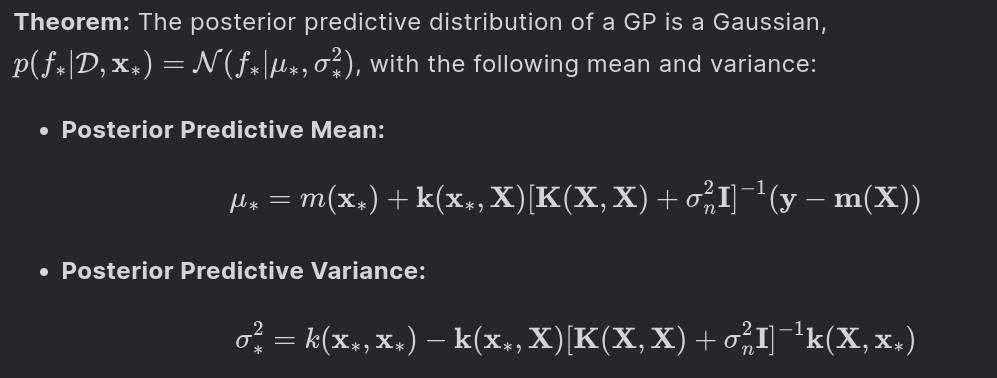

Started with some Probability and Statistics; doing Gaussians now. This post is to go deep into Gaussian Processes.
Why do I write this?
I wanted to create an authoritative document I could refer to for later. Thought that I might as well make it public (build in public, serve society and that sort of stuff).
Why does this exist?
A parametric model, such as polynomial regression (f(x) = \sum_{i=0}^M \theta_i x^i), makes a strong, fixed assumption about the functional form of the relationship being modeled.
The learning process is confined to finding the optimal parameters \boldsymbol{\theta} within this pre-defined structure.
The fundamental question that motivates Gaussian Processes is – Can we perform inference about an unknown function without first committing to a rigid parametric form?
From Multivariate Gaussians to Gaussian Processes
A univariate Gaussian is a distribution over a scalar random variable.
A multivariate Gaussian is a distribution over a vector of random variables, \mathbf{x} = [X_1, \dots, X_D]^\top. It is completely specified by a mean vector \boldsymbol{\mu} and a covariance matrix \mathbf{\Sigma}. The covariance matrix describes the relationships between all pairs of variables in the vector.
A Gaussian Process is the logical extension of this concept to an infinite-dimensional setting. It is a distribution over a function f(\mathbf{x}).
Defining a GP
A Gaussian Process is a collection of random variables, any finite number of which have a joint Gaussian distribution.
A GP defines a probability distribution over a functionf: \mathcal{X} \to \mathbb{R}. For any finite set of input points {\mathbf{x}_1, \dots, \mathbf{x}_N}, the corresponding vector of function values [f(\mathbf{x}_1), \dots, f(\mathbf{x}_N)]^\top is a random vector that follows a multivariate Gaussian distribution.
A Gaussian Process is completely specified by two functions:
The Mean Function, m(\mathbf{x}): This function defines the expected value of the function at any input point \mathbf{x}.
m(\mathbf{x}) = \mathbb{E}[f(\mathbf{x})]
It represents our prior belief about the average shape of the function. For notational simplicity, the mean function is often assumed to be the zero function, m(\mathbf{x}) = 0.
The Covariance Function (or Kernel), k(\mathbf{x}, \mathbf{x}'): This function defines the covariance between the function values at any two input points, \mathbf{x} and \mathbf{x}'.
The kernel encodes our prior beliefs about the properties of the function, such as its smoothness, periodicity, or stationarity. The choice of kernel is the most critical modeling decision when using a GP. Why?A valid kernel function must ensure that the covariance matrix it generates for any set of points is always positive semi-definite.
We denote a Gaussian Process prior over a function as:
This is why I even started this. The primary use of Gaussian Processes is for Bayesian regression.
Gaussian Process Regression Model
The full generative model assumes that our observed targets y are evaluations of the latent function f corrupted by independent, identically distributed Gaussian noise:
Prior over the latent function:f(\mathbf{x}) \sim \mathcal{GP}(m(\mathbf{x}), k(\mathbf{x}, \mathbf{x}'))
Likelihood of observations:y_n = f(\mathbf{x}_n) + \epsilon_n, where \epsilon_n \sim \mathcal{N}(0, \sigma_n^2). This is equivalent to the likelihood p(y_n | f(\mathbf{x}_n)) = \mathcal{N}(y_n | f(\mathbf{x}_n), \sigma_n^2).
Such cool notation, right?
Posterior Predictive Distribution
Let us consider a training dataset \mathcal{D} = \{\mathbf{X}, \mathbf{y}\}, where \mathbf{X} = \{\mathbf{x}_n\}_{n=1}^N are the training inputs and \mathbf{y} = \{y_n\}_{n=1}^N are the noisy training targets.
As with any regression,
We want to predict the function value f_* = f(\mathbf{x}_*) at a new test point \mathbf{x}_*.
Here’s how we do it –
The core of GP inference lies in the foundational definition: any finite collection of function values is jointly Gaussian.
Therefore, the training outputs \mathbf{y} and the test output f_* are jointly Gaussian –
\mathbf{m}(\mathbf{X}) is the vector of prior means at the training points.
\mathbf{K}(\mathbf{X}, \mathbf{X}) is the N \times N covariance matrix where K_{ij} = k(\mathbf{x}_i, \mathbf{x}_j). The term \sigma_n^2\mathbf{I} is added to account for the independent observation noise.
\mathbf{k}(\mathbf{X}, \mathbf{x}_*) is the N \times 1 vector of covariances between the training points and the test point.
k(\mathbf{x}_*, \mathbf{x}_*) is the prior variance at the test point.
Notice how we now have a joint Gaussian distribution of the form p(\mathbf{y}, f_*).
The goal is to find the posterior predictive distributionp(f_* | \mathbf{y}, \mathbf{X}, \mathbf{x}_*).
Here, I just state the analytical solution –

Interpretation:
The posterior mean is a linear combination of the observed training targets (adjusted by their prior means).
The posterior variance represents our uncertainty about the function value at the test point. It is the prior variance at that point, reduced by an amount that reflects the information gained from the training data. The variance is lowest near the training points and grows as we move away from them, correctly capturing that our uncertainty increases in regions where we have no data.
How tos
The Kernel Function and Model Properties
The choice of kernel is the primary mechanism for incorporating prior knowledge into the model. A widely used kernel is the Squared Exponential (or Radial Basis Function) kernel:
Length-scale (l): Controls how quickly the correlation between function values decays with distance. A small l produces rapidly varying (“wiggly”) functions, while a large l produces smooth functions.
Signal Variance (\sigma_f^2): Controls the overall vertical variation of the function from its mean.
Learning the Hyperparameters
The kernel parameters and the noise variance \sigma_n^2 are typically not set by hand. They are learned from the data by maximizing the marginal log-likelihood:
where \boldsymbol{\theta} denotes the set of all hyperparameters. This objective function has a natural interpretation as an implementation of Occam’s razor.
The first term is a data-fit term, while the second term, -\frac{1}{2}\log|\mathbf{K}_{\boldsymbol{\theta}} + \sigma_n^2\mathbf{I}|, is a complexity penalty term that penalizes overly complex models.